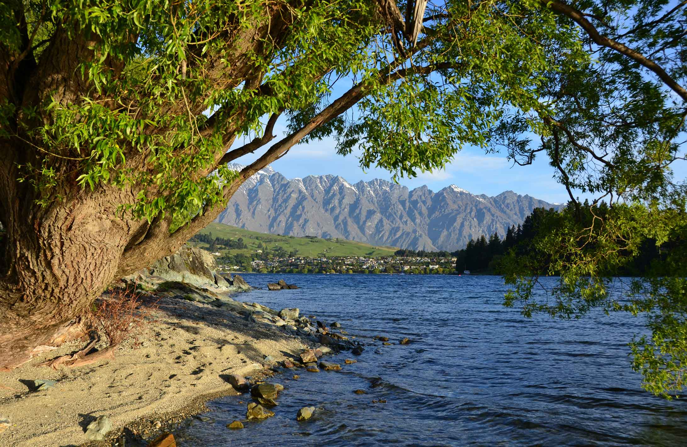

Lake Wakatipu
Queenstown Tourist Location
Queenstown's Famous Alpine Lake!
Lake Wakatipu is one of New Zealand's most spectacular
lakes and is one of Queenstown's most recognisable natural
landmarks. The long, narrow lake is surrounded by dramatic
mountains, creating an impressive landscape that attracts
visitors throughout the year.
Visitors can enjoy the lake from Queenstown's waterfront,
walk along the surrounding paths, take photographs, or
explore the lake by boat. Scenic cruises are a popular way
to experience the mountains and clear blue water from a
different perspective. The lake is also surrounded by
walking tracks and viewpoints that provide excellent
opportunities for sightseeing.
Lake Wakatipu is an excellent destination for visitors
interested in nature, photography, adventure, and
sightseeing. There are many free ways to enjoy the lake,
although activities such as cruises, kayaking, and other
water experiences can add to the overall cost of a visit.
Visitors should also consider food and transport costs
when planning their trip. Queenstown's central location
makes it easy to combine a visit to Lake Wakatipu with
other attractions around the town.
Facts:
- Located beside Queenstown
- One of New Zealand's largest and most famous lakes
- Surrounded by dramatic mountain scenery
- Popular for sightseeing and photography
- Scenic cruises are available
- Walking tracks surround parts of the lake
- Popular destination for outdoor activities
- Free to view from public areas
Costs:
- Viewing Lake Wakatipu: Free
- Walking and sightseeing: Free
- Estimated food costs: $10-$35 per person
- Estimated transport costs: $5-$20
- Scenic lake cruises: approximately $50-$150 per person
- Kayaking and water activities: approximately $40-$120 per person
- Estimated basic visit cost: $15-$70 per person